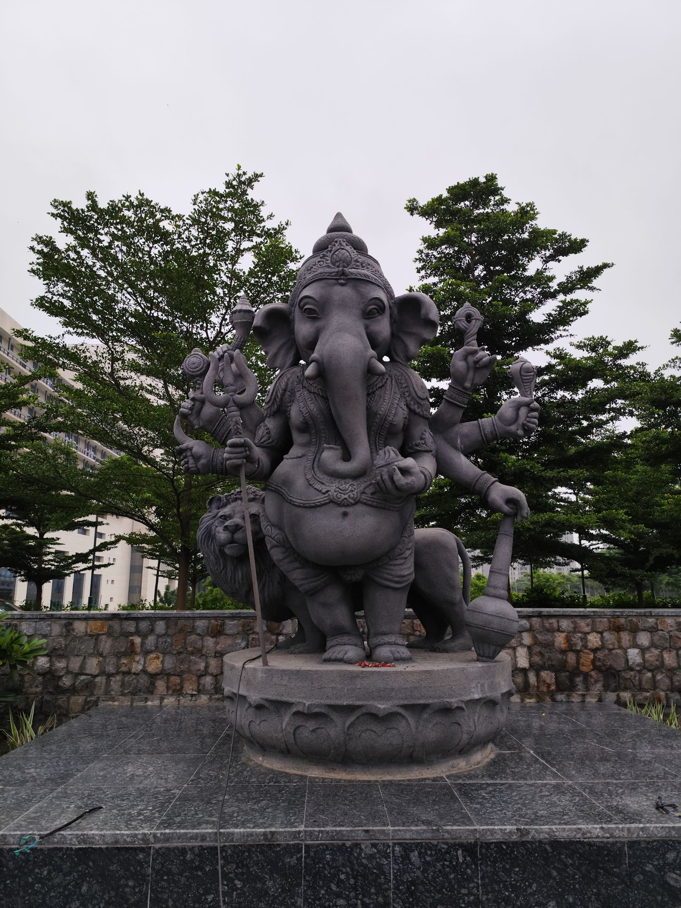
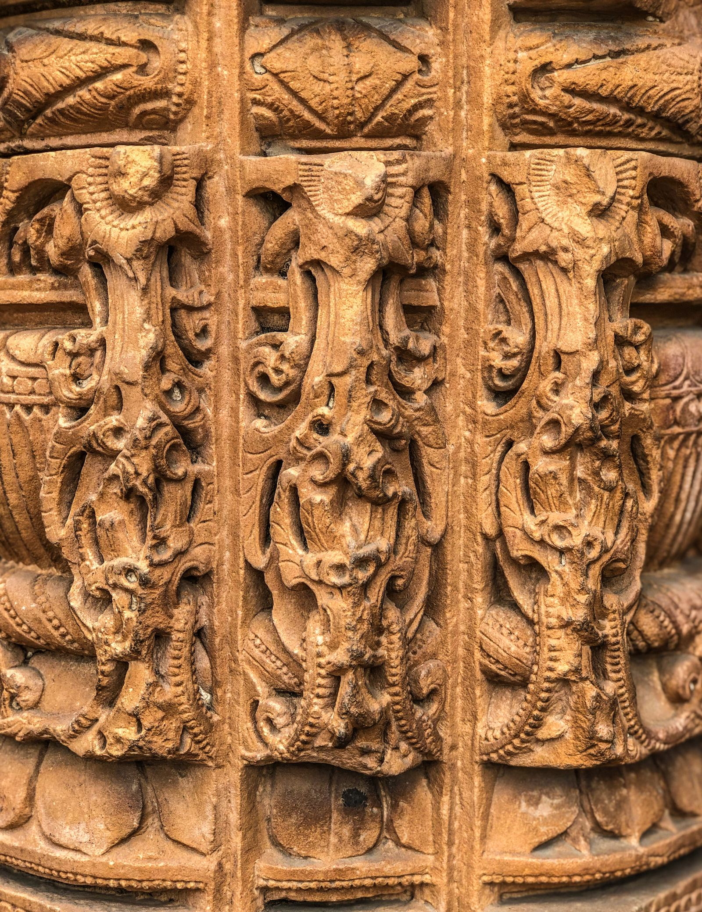

I am Bhanwar Lal Jangid. I carve marble murtis in Jaipur, and my year is ruled by the autumn festivals — Ganesh Chaturthi first, then the Durga Puja pandals — because a temple that wants its murti for the festival must order it months ahead. Marble does not hurry, and neither do I.
Below is the Ganesh on my bench right now, in the only language a commission really runs on: numbers.
150 cmFigure height — temple Ganesh, Nashik
1,755 kgThe block as it came from Makrana
18 wksUnder the chisel, start to polish
0Machine hours on the figure
Ordered in February, on the truck a full month before the festival. A router can rough out a figure in an afternoon — it also leaves the fingers looking poured, not carved. Every figure here is roughed out by hand, the way my father taught me, because the stone remembers every shortcut.

Stone Ganesh, finished and standing. A temple figure at full height — the size the spec sheet above describes.
The stone
Three grades. No fourth, and no surprises later.
Every murti starts as a block I choose myself at Makrana, the marble town three hours from Jaipur whose white stone built the Taj Mahal. I go four or five times a year, and I reject more blocks than I buy.
Each block gets the ring test: hang it, strike it with a hammer, and listen. Sound stone rings clear, like a bell. A block with a hidden crack or a soft vein answers dull — and a dull block is left at the quarry, whatever its price, because the crack you cannot hear today is the crack that opens across a face in week nine.
I also wet the block and look along it in raking light. Veins that will cross the eyes or the hands disqualify a block for a face-first figure, however fine the rest of it is.

Detail holds or it doesn't. Fine carving is only possible in stone with an even grain — which is what the ring test is for.
Stone grades — price per kilogram of block, as bought at the quarry
Grade
What it is
Per kg
Makrana First White
Snow-white, fine and even grain. The clearest ring. For temple figures and faces that must carry fine detail.
₹95
Makrana Veined
The same quarry, with grey veining running through. Sound stone, honestly cheaper — the vein becomes part of the figure's clothing and base.
₹60
Ambaji White
White marble from Ambaji, Gujarat. Slightly warm in tone, a little softer — kind to small home-shrine figures.
A five-foot Ganesh for a housing-society temple, ordered in January for Ganesh Chaturthi. The committee had been quoted six weeks by a machine shop; the honest figure was eighteen weeks, and it was ready with a month to spare.
A 45 cm Lakshmi for a family's teak shrine, ordered in June for Diwali. Small enough to carve between temple work, with painted detail the family asked for — the sari border and the lotus picked out by hand.
A community hall's forty-year-old Krishna had cracked across the base. They asked for a repair; the honest answer was a replacement, carved from photographs of the old figure so the hall kept the face it knew.
The same tables I price from at the bench. Nothing hidden.
The block table — every figure starts as a block bigger than itself
Figure height
Block size (cm)
Block weight
Carving weeks
30 cm
38 × 20 × 15
31 kg
2
45 cm
55 × 26 × 20
77 kg
3
60 cm
72 × 32 × 24
149 kg
5
90 cm
105 × 45 × 34
434 kg
8
120 cm
140 × 58 × 44
965 kg
12
150 cm
172 × 70 × 54
1,755 kg
18
Carving is charged at ₹15,000 a week — my hands, my father's tools, no piece-work passed to strangers.
Satin polish (the standard, soft sheen): weeks as the table says. Mirror polish: a quarter more time — weeks × 1.25, rounded up — because the last polish is the slowest. Painted detail: one extra week, plus ₹140 per cm of height for pigments and gold.
One week is added at the end for crating and delivery. A finished figure travels in a timber crate, on its back, packed in straw and foam — never standing, never bare.
Murti Commission Planner
Choose a height, a stone and a finish. The planner reads the tables printed above — the same arithmetic I would do on paper.
Block
72 × 32 × 24 cm
Block weight
149 kg
Stone cost
₹14,155
Carving time
5 weeks
Carving (₹15,000/week)
₹75,000
Finish extra
₹0
Ready by (incl. 1 week crating)
—
Total
₹89,155
This is a planning figure from the printed tables, not a final quote — the final quote follows the block I actually choose at Makrana, and it has never yet come in above the planner's number.
At Makrana. Ring test, wet look, raking light. Days, not hours.
2
Rough out
The block loses half its weight. The figure is found, not drawn on.
3
Shape
Proportions set by tala measure — the face is the unit of everything.
4
Detail
Hands, face, ornaments. The slowest weeks, and the ones that matter.
5
Polish & crate
Stone-by-stone polish, then a timber crate and the road.
“He told us eighteen weeks when another shop said six. We chose the eighteen — and the murti was installed three weeks before the festival, with the face our old photos promised. The six-week shop's Ganesh, we later saw, had fingers like sausages.”
— Secretary, housing-society temple committee, Pune (temple Ganesh, 150 cm)
Ordering for a festival?
Tell me the deity, the height you have room for, and the date. I will answer with the honest date first.